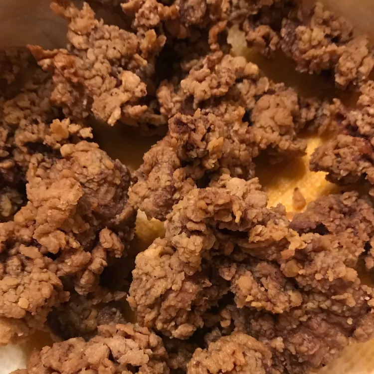

The best fried chicken, from allrecipes.com
Mom made us fried chicken livers because they were cheap, and now the convenience stores sell them in the South!
Use a fry screen — these things can pop and will burn you! Serve with pepper gravy or a packet of chicken gravy.
Ingredients
- 1 pound chicken livers
- 1 egg
- ½ cup milk
- 1 cup all-purpose flour
- 1 tablespoon garlic powder
- salt and pepper to taste
- 1 quart vegetable oil for frying
Recipe instructions
- Place chicken livers in a colander; rinse with cold water and drain well. Blot dry with paper towels.
- Whisk egg and milk together in a shallow dish until blended.
- Place flour, garlic powder, salt, and pepper into a zip-top bag; shake to combine.
- Heat oil in a deep fryer or large saucepan to 375 degrees F (190 degrees C).
- Dip chicken livers in egg mixture to coat, then transfer, one at a time, into flour mixture, shaking the bag to coat completely.
- Gently place coated livers, a few at a time, into hot oil; cover with a splatter screen and cook until crisp and golden brown, 5 to 6 minutes.
Return to top
Return to main page